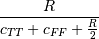
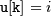
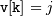
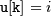
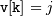
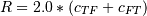
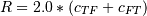

scipy.spatial.distance.yule¶
- scipy.spatial.distance.yule(u, v)[source]¶
Computes the Yule dissimilarity between two boolean 1-D arrays.
The Yule dissimilarity is defined as

where
 is the number of occurrences of
 and  for
is the number of occurrences of
 and  for
 and .
and .Parameters : u : (N,) array_like, bool
Input array.
v : (N,) array_like, bool
Input array.
Returns : yule : double
The Yule dissimilarity between vectors u and v.